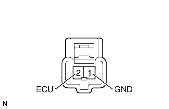

PRE-CRASH SAFETY SYSTEM > Pre-crash Safety Brake Cancel Switch Circuit |
| 1.READ VALUE USING INTELLIGENT TESTER (PRE-CRASH BRAKE CANCEL SWITCH) |
Use the Data List to check if the pre-crash brake cancel switch assembly is functioning properly (Click here).
| Tester Display | Measurement Item/Range | Normal Condition | Diagnostic Note |
| Pre-Crash Brake OFF Switch | Pre-crash brake cancel switch assembly signal / ON or OFF | ON: Pre-crash brake cancel switch assembly on OFF: Pre-crash brake cancel switch assembly off | - |
|
| ||||
| OK | ||
| ||
| 2.INSPECT PRE-CRASH BRAKE CANCEL SWITCH ASSEMBLY |
|  |
Remove the pre-crash brake cancel switch assembly (Click here).
Measure the resistance according to the value(s) in the table below.
| Tester Connection | Switch Condition | Specified Condition |
| 1 (GND) - 2 (ECU) | Pressed | Below 1 Ω |
| 1 (GND) - 2 (ECU) | Not pressed | 10 kΩ or higher |
|
| ||||
| OK | |
| 3.CHECK HARNESS AND CONNECTOR (PRE-CRASH BRAKE CANCEL SWITCH - DRIVING SUPPORT ECU) |
Disconnect the G52 switch connector.
Disconnect the G43 ECU connector.
Measure the resistance according to the value(s) in the table below.
| Tester Connection | Condition | Specified Condition |
| G52-2 (ECU) - G43-5 (PBSW) | Always | Below 1 Ω |
| G52-1 (GND) - Body ground | Always | Below 1 Ω |
| G52-2 (ECU) - Body ground | Always | 10 kΩ or higher |
|
| ||||
| OK | ||
| ||